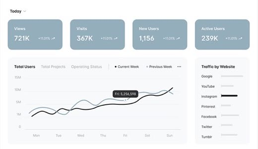

An analytics dashboard: views, visits, new users, operating status and traffic by device and location.
An analytics dashboard UI for teams that need to see how their product is doing at a glance: views, visits, new users and active users, plus traffic sources, devices and locations.
The layout uses a three-column structure — navigation, main analytics, and a live activity panel — with soft colours so the data stays the focus.
Views, visits, new users and active users with growth trends.
Current vs previous week on one line chart.
By website, device and location.
Notifications, team activity and contacts.



3 boards · research, flows, design system and all screens